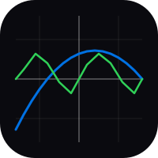

A graphing calculator that stays out of the way. Type an equation, watch it draw, then pan and zoom the plane to find what you came for.
Stack as many expressions as you like and give each its own colour, so relationships between curves are obvious.
Drag the plane and scroll to scale. The axes and gridlines relabel themselves as you go.
A real SwiftUI app on Apple platforms, not a wrapped web page — built from the same maths as the web version.
Nothing to install and no account to make. Open the page and start plotting.
Light and dark themes that follow your system, with contrast tuned for long sessions.
No ads, no purchases, no tracking. The source is on GitHub.
The web version runs straight in the browser — nothing to download.